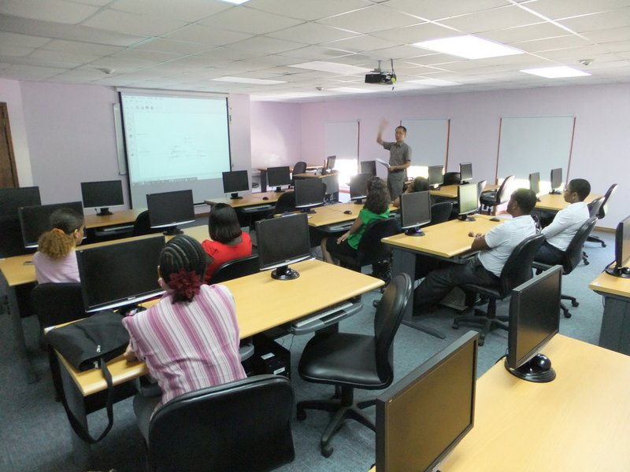

也紀念我們永遠的朋友 李士傑先生（Shih-Chieh Ilya Li）。
電子書包在臺灣：產品掛帥，專業無奈
◎ 本篇文章傳達作者意見，不代表自由軟體鑄造場電子報立場，回覆意見請見部落格原文網址，採用 CC-BY-SA 授權
摘要
「只談優點，不談缺點」，在臺灣，主導（傳統、筆記、平板）電腦輔助教學的力量來自電子資訊產業，而不是來自教學專業。在這一波電子書包狂熱中，專業意見再度缺席，將造成「科技提升教學效果」的機會再次流失，與國家龐大教育資源的浪費。
一、微積分教師所需要的數位平等電子書包
▲ sin 函數的定議，從割線到切線
數學、物理、化學的教學很適合互動學習。不論是理化的實驗，或是操作橢圓規動手體驗幾何定義， 往往比黑板上的抽象符號更能讓親手操作的學生「感受」到抽象的數理概念。今日的電腦，提供了過去教師所沒有、甚至無法想像的教育機會。筆者曾在電腦教室上過一學期的微積分課，部分主題使用電腦輔助教學，包含：
- 複習拋物線的幾何定義與代數定義（使用 drgeo 與 gnuplot）
- 複習三角函數的定義（使用 drgeo 與 gnuplot）
- 極限與連續/不連續的定義（使用 gnuplot）
- 曲線的割線與切線（使用 drgeo）
- 徒手繪製（不需要認識的）複雜函數的導函數（並用 gnuplot 驗證）
- 徒手繪製（不需要認識的）複雜函數的積分（並用 gnuplot 驗證）
- 分部積分的應用（使用 maxima 驗算）
- 二次連續與二重連續（使用 gnuplot）
從一位數學專業教師的角度來看，不論是誰出錢，如果要配發電子書包給學生，這個電子書包應該至少包含：
以最低的硬體需求來說，一片稍加修改的 ezgo DVD，或一顆安裝 slax 的 2G 可開機隨身碟，再搭配零管理的無硬碟電腦，就可以滿足這樣的需求。當然，國高中數學老師的需求與微積分課程不盡相同；但不論是哪個年級的數學課程，只需上述基礎配備再搭配其他數學教學自由軟體，就可以創造出電腦時代來臨前不敢夢想的教學效果。

▲ 聖喬瑟夫 St.Joseph's Convent School 數理教師驚艷 drgeo 與 ghemical
而且這些技術早已不稀奇新穎。筆者早在 2003 年開始介紹 drgeo 的數學教育應用、gnuplot 的應用介紹則更早。但很遺憾的是：經過十多年，這一類的科技輔助教學產品似乎一直不受數學教育界重視。這並不是僅有數學一個學科才會受益的技術，而是一整個「已有成功示範、有待推廣散布」的廣大領域。這類技術偶爾會見於自由軟體相關研討會，但畢竟研討會的目標通常是提出新穎的議題而不是促成既有創新的普及。然而使用數位平等的資訊科技融入教學，最大的挑戰向來就是擴散而不是創新。從 Everett Rogers「創新的擴散」一書的角度看來，「observability」──數理教師對於創新成效的體會──可以是一個提升擴散效果的施力點。依照筆者自身的經驗，只需要半小時到兩小時的時間，數理教師就可以感受到此類教學的優越。可惜在我國似乎不曾見過任何縣市大規模舉辦此類教師研習，更不用說後續相關教材教案的開發與推廣。於是，我國多數的數理教師對於「資訊融入學科教學」的想像始終停留在單向播放 Powerpoint 或 flash 動畫；只有少數教師有機會透過部落格、噗浪等網路資源及研討會，體認到學生動手操作的可能性與效果。而在高層選擇電子書包的決策過程當中，專業教師反應此一需求的聲音也就不會出現。
二、教學互動功能貧乏、行銷聲勢浩大的科技產品
另一方面，校園內彌漫著產品掛帥、商品主導教學的氣氛。以強大商業力量為後盾的實體商品在未經教學專業人士公開評估討論的情形下，就透過媒體及行政力量以排山倒海之勢攻佔校園；而教師們也因為新鮮感、實體具象而對這些產品有熱烈的反應。蘋果電腦的 iPad 就是一個最明顯的例子。
撇開言論管制的爭議，單純從休閒娛樂消費性電子產品的角度來看，iPad 的確是一項操作介面高度友善的產品，很適合作為一種被動閱聽的休閒工具，例如讓無意深究科技的年長者上網閱覽及欣賞音樂影片等等。此外，以被動閱聽者的單純需求來看，在蘋果電腦 iPad 政策下禁止解譯器之類的應用軟體確實可以降低病毒及木馬程式入侵的機會。
但從互動學習的角度來看，嚴格控管的環境也扼殺了許多可能性。互動科學教學網站 PhET 的常問問題集當中回答這個問題：「PhET 可以在平板電腦、iPad、Android 裝置上執行嗎？」
目前平板電腦、iPad、Android 裝置無法完整支援 Java 或 Flash，而 PhET 需要這兩者。
- iPad 不支援 Java 和 Flash，所以完全無法執行 PhET。
- Android 對 Java 的支援太差，所以 PhET 完全無法使用 Java 所撰寫的模擬；至於用 Flash 所撰寫的模擬，Android 裝置可以支援一部分，但效果很差。
要讓這些裝置執行 PhET，補足平臺與環境不是唯一需要克服的問題。就算用別的程式語言重寫 PhET 也無法解決問題，因為PhET 的設計假設操作的介面是滑鼠與鍵盤。有些事情用觸控螢幕來做就是不順手，例如「按右鍵」和打字，尤其是虛擬鍵盤會蓋到畫面的時候；而有些事則是完全不可行，例如滑鼠移動到物件上方。
如果貴學區正在考慮購買 iPad 或平板電腦，請注意 PhET 的模擬會大打折扣甚至完全失效。我們推薦解析度至少 1024x768 的筆電或小筆電。詳見系統需求。
另一個深具教育意義、由 MIT 所開發，並且在每童一機 (OLPC) 計畫當中扮演重要角色的互動學習環境 Scratch，也被排拒在 iPad 門外：
非常遺憾蘋果電腦依據其禁止解譯或執行程式碼應用軟體的政策，決定不允許 iPhone 或 iPad 執行 Scratch。在我們看來，最重要的事情莫過於鼓勵兒童用新形式的媒體設計、創作以表達自我，這正是 Scratch 背後的理念。全世界的孩子們用 Scratch 設計他們的互動故事、遊戲、動畫、模擬器，並在線上分享他們的作品。在這個過程中孩子們學會創意思考、系統性推論和合作。
Android 並沒有蘋果電腦的「禁止解譯器」政策，而且確實已有成功在 Android 上執行 Scratch 的報告，所以比 iPad 更適合用於需要互動的教育環境。不過話說回來，既然筆記型電腦沒有「欠缺滑鼠」的問題，且早已完整支援 PhET、Scratch 以及 drgeo、gnuplot、maxima、stellarium、ghemical……等其他眾多教育軟體，那麼我們堅持捨筆電而就平板的理由又是什麼呢？遺憾的是，面對這波平板狂熱，過去追隨微軟、強勢主導國家政策的 PC 產業節節挫敗，現在似乎又不懂得善用學科教師的專業意見來推廣自家產品。
三、教育不敵利益
國家政策研究基金會的趙麗雲委員在「電子書包上路，新教學與學習體系亟須建置」一文中提到：
根據國外研究機構報告指出，至 2013 年前全球電子書的複合成長率將達到 124%，其產值將超過 25 億美元。另據推估，國內電子書產業鏈去年（97 年）產值為 120 億元，在行政院擬訂電子書產業行動方案的推波之下，其產值可望在 2013 年達到一千億元。
Zdnet 的意見則更直接露骨。他在標題為「電子書包促進會成立，推動數位化學習 500 億商機」的文章中提到：
台北市電腦公會、國科會、教育界及掌上型裝置軟硬體製造商等產官學界人士今日組成電子書包促進會，以更具規模及組織的行動促使我國中小學電子書包普及。……根據電子書包促進會表示，依據台灣國小到高中 380 萬學生，每人一萬元的費用，以及 3600 所實施學校的無線網路佈建，共 90 億，加上其他費用，估計約有 500 億的產值。
於是在不曾公開徵詢專業教師意見的情況下，臺北市決定推廣電子書包並設計專屬教案： > 教育局表示，100 學年度提供給市內 16 所國中小，每校 70 台，共 1120 台的平板電腦，均由國內業者提供，每台單價約 1 萬元，所有費用均由經濟部工業局埋單。101 年學年度推廣至 30 校、102 年 50 校、103 年再加 70 所學校。明年起，所需費用都由市府支付，學生或家長不用出半毛錢。
當然，文中沒有提到的是：哪些專業人士參與推薦這樣的電子書包推廣專案？是第一線的專業教師？還是視國家教育資源為提款機的利益團體？文中也忘記陳述一個簡單的事實：經濟部工業局的經費來自納稅人──全國的納稅人，而非僅有臺北市的納稅人。於是在各縣市不願吃虧的本位主義氣氛之下，後續的輿論呼聲將是電子產業利益團體的最佳推銷員，全國納稅人於是集體將國家教育資源送入利益團體手中，為全國每一位學童換來不一定能夠發揮教育效果的新穎玩具。
身兼一位大學數學教師和家長，如果學生必須購買電子書包，我所樂見的，是這些電子書包能支援教學效果良好的互動式幾何與代數教學軟體（drgeo、gnuplot、maxima 等等），或是互動式創作工具（例如 PhET 與 Scratch）；而非學生家長被迫嘉惠國家電子產業。
「以平板電腦作為電子書包」一事，對臺灣社會的意義僅止於師生家長得到新玩具、縣市長增添政績及電子產業增加產值。至於數、理、化、等學科的教育專業看法，卻連在教育界裡也悄然不聞。在臺灣，主導電腦輔助教學、電子書包導入校園的聲音，既不是來自 MIT 的遠見，也不是來自基層學科教師的需求，而是來自「把教育市場視為大餅」的電子產業，以及政治體系中的推銷員。但是，當我們集體決定捨棄「比較符合數位平等與教學需求」的技術，改用「即將擴大城鄉數位落差且不符教學需求」的技術時，國家教育資源所滋養的對象到底是求知的學童，還是求利潤的電子產業？我們，真的是一個在乎教育的民族嗎？
四、結論：誰能阻止反客為主？
MIT 每童一機計畫主持人 Nicholas Negroponte 教授談論今日主流資訊教育淪為辦公室套裝軟體 (Office) 訓練班時，大膽道出許多教師不敢說出口的質疑：
我認為那（教學生使用 Office）根本就是一種罪行──小孩子應該做的事情是創作、溝通、探索、分享，不是操作辦公室自動化工具。
至少從十多年前開始，商業利益就透過政治力量主導科技教育，而一般民眾及教育界卻渾然不覺，甚至透過輿論及教育機構系統性地協助炒作。它所造成的負面影響極為深遠，直到多年後的今天，我們仍舊很難走出這個框框。那麼現在如果我們再次盲目地、拒絕思考地追隨商業炒作，未來又將剝奪下一代多少真實的教育機會？
這種「產品行銷主導政策、原始公共議題失焦」的現象，在其他產業也層出不窮。比爾與美琳達蓋茲基金會僱用 Trevor Mundel 擔任基金會全球健康計畫總裁。Mundel 現任職於瑞士藥廠 Novartis Pharma 開發部門國際主席。Novartis 藥廠的作為近年來在印度引起許多爭議，最近一次的事件是 Novartis 企圖以「永遠的專利」(evergreening) 手法阻止廉價的普通藥品上市。Techdirt 網站評論：
今日醫療健保問題主要爭議之一是：藥品議題取代健康議題成為鎂光燈的焦點。沒錯，藥品是健康問題的環節之一，但並非全部。遺憾的是許多決策者讓藥廠來主導辯論；而過去一長串的事件顯示，藥廠關心的並不是大眾的健康，而是他們自己的利益。藥廠爭取自己的利益並沒有錯；我的問題是：為什麼讓他們主導公共政策，甚至讓他們用不公平及可疑的手段爭取利益，以至於社會大眾無法取得（或無法以合理價格取得）藥品？
本文和 Techdirt 一樣，我們所主張的並不是反對商業利益，而是商業利益不應該反客為主，不應該將整個社會的教育思考誘入精美華麗的牢籠，就如同藥廠不應該將整個社會的健保思考導入藥到病除的想像。電子書包與電腦輔助教學，應該從教育專業人士的真實需求出發；政策的形成，應該經過公開透明的討論。由教育專業人士參與公開討論；找到真正有助於提升學童創作、思考、理解、合作能力，真正最符合成本效益的方案。然後再由──理想上是「於本地設廠且僱用本地員工的國內自有品牌」的──電子產業配合教育專業的需求，量產真正有助於教學現場的廉價方案，順便在過程中創造確實屬於我國產業自身的產值。這才是真正有利於社會整體的政策。至於我們的學科專業教師也需要更積極地發聲，促成縣市政府教育局舉辦「教學為主，科技為輔」的學科教師研習，並善用既有的數位平等軟體工具開發教材與教案（例如 drgeo 的互動圖案），讓早就存在的創新有機會真正地擴散。
本文延續「科技融入教育：產值觀點或教育觀點？」一文，將在「創新教育與自由軟體校園應用」研討會當中發表。
專欄總覽


E-Mail：contact@openfoundry.org Address：台北市南港區研究院路2段128號 中央研究院資訊科學研究所 . 隱私權條款. 使用條款